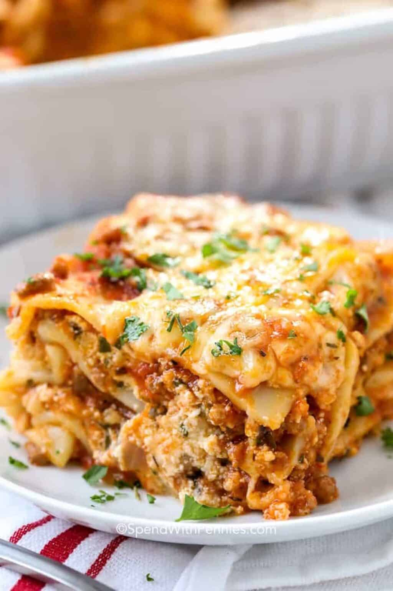

Home
Lasagna

Description
Lasagna is one of the world’s most beloved comfort foods, celebrated for its rich layers and hearty textures. Originating in Italy, this baked dish traditionally features wide, flat sheets of pasta layered with a savory Bolognese meat sauce and a creamy Béchamel or ricotta cheese filling. Once assembled and topped with a generous layer of mozzarella and Parmesan, it is baked until the edges are crispy and the cheese is golden and bubbling.
Beyond its traditional roots, lasagna is incredibly versatile, making it a staple in kitchens globally. Modern variations cater to every palate, ranging from roasted vegetable layers with spinach and mushrooms to decadent "white" lasagnas featuring chicken and garlic cream sauce. Because it is easy to prepare in large batches and tastes even better as leftovers, it remains a favorite centerpiece for family gatherings and cozy Sunday dinners.
Ingredients
- Lasagna noodles
- Ground beef
- Crushed tomatoes and Tomato paste
- Onion and Garlic
- Mozzarella cheese
- Parmesan cheese
- Fresh parsley, Basil, and Oregano
- Olive oil, Salt, and Black pepper
- Egg
Steps
- Brown the Meat: Sauté onion and garlic in olive oil, then add meat and cook until browned.
- Make the Sauce: Stir in crushed tomatoes, paste, and herbs; simmer for 20 minutes.
- Prepare the Filling: Mix ricotta, egg, parsley, and some parmesan in a bowl.
- Cook the Pasta: Boil noodles if necessary; skip if using oven-ready sheets.
- Layer the Dish
-
Base: Spread a thin layer of meat sauce.
-
Repeat: Add noodles, then ricotta, then mozzarella/parmesan, then meat sauce.
-
Final: Finish with noodles, sauce, and a thick layer of cheese.
- Bake: Cover with foil and bake at 190°C (375°F) for 25 minutes.
- Brown: Remove foil and bake for 15 more minutes until bubbling.
- Rest: Wait 15 minutes before slicing to allow the layers to set.